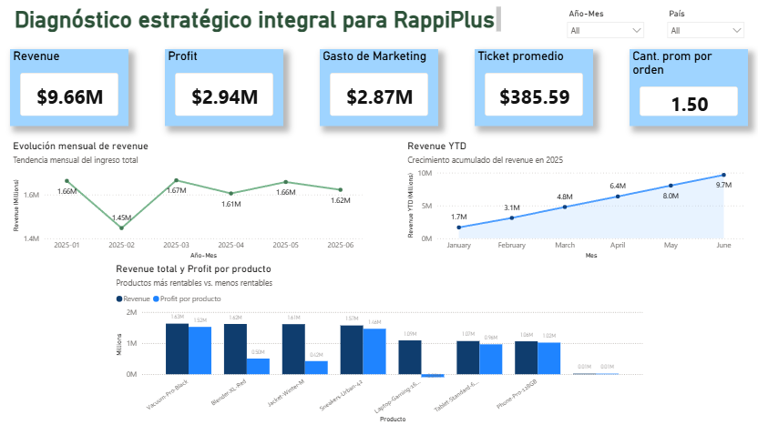

Retail Weekly Sales Analysis: Exploratory Data Analysis and Statistical Insights
This project analyzes weekly retail sales data to identify the key factors that influence sales performance and uncover actionable business insights.
The analysis combines exploratory data analysis (EDA), feature engineering, statistical testing, and machine learning techniques to evaluate the impact of seasonality, promotions, holidays, and store characteristics on weekly sales.
Using Linear Regression and Random Forest models, the project explores sales forecasting capabilities while providing data-driven recommendations to support retail planning, inventory management, and promotional strategies.
Python | Data cleaning | Exploratory Data Analysis (EDA) | Feature Engineering | Statistical Hypothesis Testing | Predictive Modeling | Data Visualization | Business Insight Generation
Project Objective
To identify the key factors influencing weekly retail sales performance, evaluate the impact of holidays, promotions, and regional differences, and generate actionable insights that support forecasting, inventory planning, and data-driven retail decision-making.
Business Questions Addressed
- What factors most strongly influence weekly retail sales?
- Do holidays and promotional markdowns significantly increase sales performance?
- Are there meaningful differences in sales behavior across regions?
- How predictable are weekly sales using historical operational data?
- Which variables should decision-makers prioritize when planning inventory, promotions, and staffing?
- How can predictive models support retail forecasting and strategic planning?
Methodology
-
Data Loading and Preparation (Python): cleaning, validation, and structuring of datasets (features, sales, and store).
-
Feature Engineering: to improve analytical depth and forecasting accuracy, new variables were created from existing data (Time Features, Business Features, Growth Metrics, Lag Features and Rolling Features).
-
Exploratory Data Analysis (EDA): The EDA phase focused on uncovering sales trends, seasonal behaviors, promotional impacts, and regional differences to generate initial business insights and guide subsequent statistical and predictive analyses.
-
Statistical Analysis: Statistical analysis was conducted to validate business assumptions, quantify relationships between variables, and identify significant factors influencing weekly retail sales.
-
Predictive Modeling: Predictive modeling was used to estimate future sales performance, compare model effectiveness, and uncover the variables with the greatest impact on weekly retail sales.
Business Insights
1. Seasonal Sales Patterns
Weekly sales exhibit strong seasonality, with demand fluctuating significantly throughout the year and peaking during specific periods.
2. Holiday Impact on Sales
Holiday weeks consistently outperform non-holiday periods, confirming the significant influence of seasonal events on retail performance.
3. Regional Performance Differences
Statistical analysis revealed meaningful differences in sales performance across regions, highlighting the need for localized business strategies.
4. Promotions Drive Sales Growth
Promotional markdowns showed a positive relationship with sales performance, demonstrating their effectiveness in stimulating customer demand.
5. Historical Sales are Strong Predictors
Recent sales behavior, particularly rolling averages and lagged sales, emerged as the most influential factors for forecasting future sales.
6. Reliable Forecasting Capability
Predictive models were able to explain approximately 63% of sales variability, demonstrating the potential of data-driven forecasting for retail planning and decision-making.
Conclusion
This analysis revealed that weekly retail sales are primarily influenced by historical sales behavior, promotional strategies, seasonality, and regional factors. Statistical testing confirmed the significant impact of holiday periods and regional differences on sales performance, while predictive modeling demonstrated the potential to forecast future sales using operational and promotional variables. Overall, the results highlight the importance of leveraging historical trends and business intelligence to support retail planning and decision-making.
Business Recommendations
- Implement region-specific sales and marketing strategies to address differences in customer behavior and sales performance.
- Strengthen inventory planning and resource allocation ahead of holiday periods to capitalize on increased demand.
- Use promotional markdowns strategically during low-demand periods to drive sales and improve revenue performance.
- Incorporate historical sales indicators into forecasting processes to enhance prediction accuracy.
- Prioritize investment and operational support for high-performing stores and departments.
- Closely monitor regions with higher sales volatility to reduce operational risk and improve planning efficiency.
Key Visualizations
1. Weekly Sales Over Time
Sales exhibit marked seasonality and significant fluctuations over time.
2. Holidays vs Non-Holiday Weekly Sales
Weeks with holidays generate significantly higher sales than regular weeks.
3. Weekly Sales by Region
Significant differences in sales performance across regions suggest opportunities for region-specific business strategies.
4. Monthly Sales Heatmap
It allows for the visual and intuitive identification of seasonal patterns and months of peak demand.
5. Markdown Impact on Weekly Sales
Showed how promotional activities influence customer demand and revenue generation.
6. Feature Importance Analysis
Identified rolling sales averages, lagged sales, and markdown activity as the strongest predictors of future sales performance.
Professional Value of the Project
1. End-to-End Analytics Process
Applied the complete data analytics lifecycle, including data cleaning, EDA, statistical analysis, feature engineering, machine learning, and business reporting.
2. Business-Oriented Thinking
Translated analytical findings into actionable recommendations for inventory planning, promotions, forecasting, and operational decision-making.
3. Advanced Analytical Techniques
Utilized statistical testing, feature engineering, and predictive modeling to uncover meaningful business insights.
4. Data Storytelling & Communication
Presented technical findings through clear visualizations, executive summaries, and business-focused conclusions.
5. Retail Analytics Experience
Developed practical experience analyzing retail sales performance, customer demand patterns, seasonality, promotions, and forecasting strategies.
RappiPlus Subscription Analytics: Revenue, Retention and Funnel Optimization
This project analyzes the performance of the RappiPlus subscription service to evaluate user behavior,
profitability, customer retention, and conversion efficiency.
The analysis combines Python, SQL, cohort analysis, funnel analytics, and A/B testing techniques to
identify growth opportunities and optimize the customer journey.
Through a business-oriented analytical approach, the project transforms operational and behavioral
data into actionable insights that support strategic decision-making and sustainable business growth.
Python | SQL | Data Cleaning | Funnel Analysis | Cohort Analysis | A/B Testing | Business Analytics | Dashboarding
Project Objective
To evaluate the performance of the RappiPlus subscription service by analyzing profitability,
customer behavior, retention patterns, and conversion efficiency in order to identify growth
opportunities and support data-driven business decisions.
Business Questions Addressed
- Is the subscription model financially sustainable and profitable?
- At which stages of the customer journey are users abandoning the purchase process?
- Do subscribers return and generate long-term business value?
- How effectively does the conversion funnel transform visitors into paying customers?
- Do product changes have a measurable impact on user behavior and business performance?
- Which actions could improve conversion, retention, and profitability?
Methodology
-
Data Preparation (Python): data cleaning, validation, and structuring of datasets including orders, catalog information, and marketing data.
-
Profitability Analysis: calculation of key business KPIs such as Revenue, Cost, and Profit to evaluate financial performance and identify high-value customer segments.
-
Conversion Funnel Analysis (SQL): evaluation of the customer journey to identify drop-off points and conversion bottlenecks.
-
Cohort Analysis (SQL): examination of customer retention and behavioral patterns over time to assess subscription loyalty and engagement.
-
A/B Testing (Python): statistical evaluation of product changes to measure their impact on user behavior and business outcomes.
-
Dashboarding: communication of findings through visual analytics and business-focused reporting.
Business Insights
1. Data Quality Supports Reliable Decision-Making
Data preparation and validation ensured a consistent analytical foundation, enabling trustworthy
business insights and more accurate performance evaluation.
2. Profitability Varies Across Customer Segments
Profitability analysis revealed differences in value generation among customer groups,
highlighting opportunities to prioritize high-performing segments.
3. Critical Funnel Drop-Off Points Were Identified
Funnel analysis exposed stages of the subscription process with significant customer abandonment,
providing clear opportunities to improve conversion performance.
4. Retention Patterns Influence Long-Term Value
Cohort analysis uncovered behavioral trends that help explain how customer engagement evolves
over time and contributes to recurring revenue.
5. Product Changes Can Be Quantifiably Measured
A/B testing enabled objective evaluation of product modifications, supporting evidence-based
decisions rather than assumptions.
6. Data-Driven Opportunities for Growth
The analysis identified actionable opportunities to strengthen conversion rates, improve
retention, and maximize profitability across the subscription business model.
Conclusion
This analysis provided a comprehensive understanding of the RappiPlus subscription service,
from customer acquisition through retention and profitability. The results demonstrated the
value of combining behavioral analytics, funnel analysis, cohort analysis, and experimentation
to support business growth initiatives and optimize customer experience.
Business Recommendations
- Optimize funnel stages with the highest customer abandonment rates.
- Implement retention initiatives targeted at cohorts with declining engagement.
- Prioritize customer segments that generate the highest profitability.
- Expand the use of A/B testing to validate future product and marketing decisions.
- Monitor funnel performance and customer lifetime value as core business metrics.
- Use behavioral insights to personalize customer experiences and subscription offerings.
Key Visualizations
1. Conversion Funnel Analysis
Visualized the customer journey and identified stages with significant user abandonment.
2. Cohort Retention Analysis
Showed how customer retention evolves over time and highlighted recurring engagement patterns.
3. Business KPI Dashboard
Presented key performance indicators related to revenue, costs, profitability, and subscription performance.

1. End-to-End Business Analytics
Applied the full analytics workflow, from data cleaning and SQL analysis to experimentation
and business reporting.
2. Customer Lifecycle Analysis
Evaluated acquisition, conversion, retention, and profitability across the customer journey.
3. Product Analytics & Experimentation
Utilized A/B testing methodologies to support evidence-based product decisions.
4. Business-Oriented Problem Solving
Connected analytical findings directly to conversion, retention, and profitability objectives.
5. Data Storytelling & Communication
Transformed analytical outputs into actionable recommendations and executive-level insights.
Proyecto RappiPlus: De datos a decisiones de negocio
Análisis end-to-end del servicio de suscripción RappiPlus enfocado en evaluar
comportamiento de usuarios, rentabilidad y eficiencia del funnel. El proyecto
integra Python, SQL y técnicas estadísticas para transformar datos en decisiones
de negocio accionables.
Python | SQL | A/B Testing | Data cleaning | Funnel analysis | Cohort analysis | Dashboarding
Objetivo del proyecto
Evaluar el desempeño del servicio RappiPlus analizando ingresos, comportamiento
de usuarios y eficiencia del proceso de compra para identificar oportunidades
de crecimiento y mejora.
Problemas de negocio a resolver
- Determinar si el modelo de suscripción es rentable.
- Identificar en qué etapas del funnel se pierden usuarios.
- Analizar si los usuarios regresan y generan valor en el tiempo.
- Evaluar si los cambios en producto generan impacto real.
- Traducir los resultados en insights para la toma de decisiones.
Metodología
-
Preparación de datos (Python): limpieza, validación y
estructuración de datasets (pedidos, catálogo y marketing).
-
Análisis de rentabilidad: cálculo de KPIs clave
(Revenue, Cost, Profit) e identificación de segmentos rentables.
-
Funnel de conversión (SQL): análisis del recorrido del
usuario para detectar puntos de abandono.
-
Análisis de cohortes (SQL): evaluación de retención y
comportamiento en el tiempo.
-
A/B Testing (Python): evaluación del impacto de cambios
en producto mediante pruebas estadísticas.
-
Dashboarding: comunicación de insights mediante visualización.
Principales resultados
1. Calidad de los datos
Se generaron datasets limpios y estructurados que permitieron un análisis confiable del negocio.
2. Rentabilidad del modelo
Se identificaron KPIs clave para evaluar ingresos, costos y ganancias, así como segmentos con mayor contribución económica.
3. Pérdida de usuarios en el funnel
El análisis del funnel permitió detectar etapas críticas con alto abandono de usuarios.
4. Retención de usuarios
El análisis de cohortes reveló patrones de comportamiento en la repetición de uso del servicio.
5. Impacto de cambios en producto
A través de pruebas A/B se evaluó el impacto de modificaciones en el proceso de compra.
El proyecto permitió identificar oportunidades claras para mejorar conversión, retención y rentabilidad.
Conclusión
El análisis integral permitió entender el desempeño del servicio desde la adquisición
hasta la retención, generando evidencia para optimizar la experiencia del usuario y
maximizar el valor del negocio.
Recomendaciones
- Optimizar etapas del funnel con mayor abandono.
- Implementar estrategias para mejorar retención de usuarios.
- Priorizar segmentos con mayor rentabilidad.
- Validar cambios mediante experimentación continua (A/B testing).
Visualizaciones clave
1. Funnel de conversión
Representación del recorrido del usuario y puntos de abandono.
2. Análisis de cohortes
Visualización de retención de usuarios a lo largo del tiempo.
3. KPIs de negocio
Métricas clave de ingresos, costos y rentabilidad.
Valor profesional del proyecto
- Desarrollo de análisis end-to-end desde datos hasta decisiones.
- Aplicación de Python, SQL y estadística en un mismo proyecto.
- Evaluación de producto mediante A/B testing.
- Enfoque en negocio: conversión, retención y rentabilidad.
Dashboard de Desempeño Comercial 2024–2025
Desarrollo de un dashboard ejecutivo en Power BI para analizar ingresos, costos,
rentabilidad y márgenes en Andes Retail Group durante 2024–2025. El proyecto
combina modelado de datos, transformación con Power Query y diseño visual
estratégico para apoyar la toma de decisiones comerciales.
Power BI | Power Query | Modelado de datos | Visualización | Data storytelling
Objetivo del proyecto
Evaluar la evolución del desempeño comercial entre 2024 y 2025 e identificar
los factores que influyen en las variaciones de ingresos, costos y rentabilidad.
Problema de negocio a resolver
- Analizar cómo ha evolucionado el ingreso total entre 2024 y 2025.
- Identificar factores que explican variaciones en el desempeño comercial.
- Detectar regiones, categorías y segmentos clave que impulsan o frenan el crecimiento.
Metodología
-
Preparación de datos: importación desde Excel,
validación de tipos y limpieza en Power Query.
-
Transformación: estandarización de fechas,
creación de variables (Nivel de Venta) y validación de calidad de datos.
-
Diseño del dashboard: construcción de KPIs,
visualizaciones comparativas y estructura orientada a narrativa ejecutiva.
Principales resultados
1. Evolución del desempeño comercial
Los ingresos mostraron fluctuaciones relevantes con caída en el primer semestre
y recuperación hacia el cierre del año.
2. Segmentos que impulsan el crecimiento
Categorías como Electrónica y Deportes, así como mercados como Perú,
contribuyeron significativamente al crecimiento.
3. Áreas de oportunidad
Se identificaron regiones y segmentos de bajo margen que impactan negativamente
la rentabilidad del negocio.
Existen oportunidades claras en optimizar mercados débiles y potenciar segmentos de alto valor.
Conclusión
El dashboard permite entender la dinámica del negocio a nivel estratégico,
identificando patrones de crecimiento, estacionalidad y oportunidades de mejora
en diferentes dimensiones comerciales.
Recomendaciones
- Priorizar mercados con alto potencial de crecimiento (ej. Perú).
- Optimizar regiones con bajo desempeño comercial.
- Potenciar categorías de alto impacto en ingresos.
- Implementar estrategias diferenciadas por segmento de cliente.
Visualizaciones clave
1. Desempeño por categoría
Identificación de categorías con mayor impacto en ingresos y rentabilidad.
2. Desempeño por país
Comparación geográfica para detectar mercados clave y áreas de mejora.
Valor profesional del proyecto
- Diseñar dashboards ejecutivos orientados a negocio.
- Aplicar data storytelling para toma de decisiones.
- Analizar desempeño comercial con enfoque estratégico.
- Traducir datos en recomendaciones accionables.
ConectaTel – Análisis de uso y segmentación de clientes
Análisis del comportamiento de usuarios de una empresa de telecomunicaciones
en Latinoamérica, enfocado en identificar patrones de consumo, segmentar clientes
y detectar oportunidades comerciales mediante técnicas de análisis exploratorio y limpieza de datos.
Python | Pandas | Data cleaning | EDA | Segmentación | Visualización
Objetivo del proyecto
Construir una visión clara del comportamiento de los clientes para identificar patrones
de uso, segmentar usuarios y generar insights accionables que permitan optimizar planes
y mejorar la experiencia del usuario.
Problemas de negocio a resolver
- Identificar patrones de consumo de llamadas y mensajes.
- Segmentar clientes según nivel de uso y edad.
- Detectar comportamientos atípicos (outliers).
- Encontrar oportunidades para optimizar planes comerciales.
Metodología
-
Exploración de datos: análisis de estructura, tipos de datos
e identificación de valores faltantes.
-
Limpieza de datos: corrección de tipos, validación de rangos
y detección de outliers.
-
Análisis exploratorio (EDA): uso de distribuciones,
boxplots y análisis estadístico.
-
Segmentación: clasificación de usuarios por nivel de uso
(bajo, medio, alto) y por grupo de edad.
-
Visualización: gráficos comparativos entre segmentos
para identificar patrones relevantes.
Principales resultados
1. Patrones de uso
Se identificaron diferencias claras en el consumo de minutos y mensajes entre usuarios,
evidenciando distintos niveles de uso del servicio.
2. Segmentación de clientes
Se construyeron segmentos basados en nivel de uso y edad, permitiendo
diferenciar perfiles de clientes y entender su comportamiento.
3. Identificación de outliers
Se detectaron usuarios con comportamientos atípicos, tanto en consumo excesivo
como en uso mínimo del servicio.
4. Oportunidades comerciales
El análisis permitió identificar segmentos subatendidos y posibles mejoras
en la oferta de planes.
Se identificaron oportunidades claras para personalizar planes y mejorar la experiencia del cliente.
Conclusión
El proyecto permitió comprender el comportamiento de los usuarios y segmentarlos
de manera efectiva, generando insights clave para optimizar la estrategia comercial
y mejorar la propuesta de valor del servicio.
Recomendaciones
- Diseñar planes diferenciados según nivel de uso del cliente.
- Crear estrategias específicas para cada segmento etario.
- Monitorear y analizar continuamente outliers para detectar riesgos u oportunidades.
- Optimizar la oferta de planes para mejorar retención y satisfacción.
Visualizaciones clave
1. Distribución de uso
Análisis de patrones de consumo mediante histogramas y boxplots.
2. Segmentación por nivel de uso
Clasificación de usuarios en grupos de bajo, medio y alto consumo.
3. Comparación por edad
Evaluación del comportamiento entre diferentes grupos etarios.
Valor profesional del proyecto
- Aplicar técnicas de segmentación de clientes basadas en datos.
- Identificar patrones de consumo en telecomunicaciones.
- Detectar oportunidades comerciales mediante análisis de datos.
- Traducir análisis exploratorio en decisiones de negocio.
Análisis de datos operativos para optimizar recursos
En este proyecto analicé datos de calidad de soluble, mantenimiento y disposición para
identificar desperdicio y fugas en procesos de maquinado. A través de técnicas de limpieza,
análisis exploratorio y modelado, se detectaron oportunidades de recuperación del recurso,
logrando reducir costos operativos y mejorar la sostenibilidad del proceso.
EXCEL | POWER BI | RECOLECCIÓN DE DATOS | LIMPIEZA DE DATOS |
TRANSFORMACIÓN DE DATOS | ANÁLISIS EXPLORATORIO | VISUALIZACIÓN
Problemas de negocio a resolver
- Determinar qué parámetros de calidad del soluble permiten su reciclaje.
- Identificar la proporción de soluble que se dispone sin tratamiento previo.
- Detectar prácticas operativas que generan desperdicio innecesario.
- Estimar el ahorro potencial al recuperar soluble mediante filtración o reciclaje.
Metodología
- Recolección de datos:
Datos obtenidos de registros físicos en planta:
- Calidad del soluble
- Mantenimientos predictivos y correctivos
- Manifiestos de disposición
- Preprocesamiento:
- Limpieza y estandarización de datos
- Eliminación de inconsistencias
- Verificación de duplicados
- Análisis y modelado:
- Análisis esploratorio (EDA):evaluación de patrones de calidad y consumo
- Modelado predictivo: estimación de ahorro potencial mediante simulación y regresión
- Clustering: clasificación del soluble según su nivel de contaminación
Principales resultados
1. Factores críticos de contaminación
Se identificó que la contaminación del soluble está relacionada principalmente con prácticas operativas, como:
- Presencia de basura
- Residuos de desengrasante
- Materiales ajenos al proceso
👉 Esto acelera la degradación del soluble y aumenta su disposición.
2. Impacto de fugas en el consumo
- Máquinas con historial de fugas presentan mayor consumo de soluble
- Existe mayor variabilidad en la concentración del fluido
👉 Las fugas son un factor clave en el desperdicio del recurso.
3. Oportunidad de recuperación
- Parte significativa del soluble puede recuperarse mediante filtración o separación
- Existe potencial de reducción en costos de compra y disposición
4. Relación entre mantenimiento y eficiencia
Máquinas con mantenimiento predictivo constante tienen:
- Menor variabilidad en calidad
- Menor volumen de disposición
👉 El mantenimiento impacta directamente la eficiencia operativa.
Conclusión (impacto del proyecto)
El análisis permitió identificar oportunidades claras para reducir desperdicios y costos asociados
al uso del soluble. La implementación de estrategias de reciclaje y mejora operativa puede generar
ahorros significativos y contribuir a procesos más sostenibles.
Recomendaciones
Estandarizar prácticas de limpieza para reducir contaminación
Implementar sistemas de reciclaje (filtración, centrífugas, separación de aceites)
Priorizar mantenimiento predictivo en máquinas críticas
Monitorear indicadores clave:
- pH
- concentración
- conductividad
- % de contaminación
- volumen dispuesto por máquina
Visualizaciones clave
1. Parámetros de calidad por sección
Análisis de concentración y pH que permitió identificar desviaciones y deterioro del soluble.
2. Volumen de disposición por máquina
Identificación de equipos con mayor desperdicio y posibles causas.
3. Tipos de contaminación
Clasificación de contaminantes para definir estrategias específicas de recuperación.
4. Distribución de mantenimiento
Comparación entre mantenimiento predictivo y correctivo para evaluar impacto en desempeño.
Este proyecto demuestra capacidad para:
- Analizar datos operativos complejos
- Traducir datos en decisiones de negocio
- Identificar oportunidades de ahorro
- Integrar análisis técnico con impacto real en costos y sostenibilidad